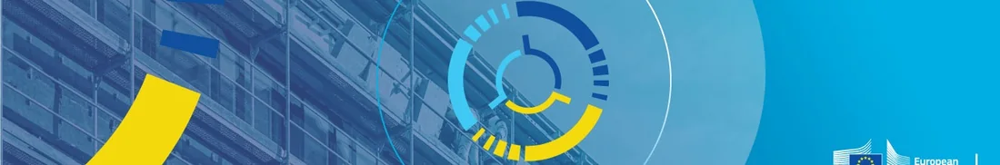

European Energy Efficiency Financing Coalition
A high-level initiative bringing together the European Commission, Member States, financial institutions and representatives of industry.
What is the Coalition?
The European Energy Efficiency Financing Coalition builds on the experience of EEFIG and creates a permanent framework for cooperation among the public sector, finance and the market. It was preceded by a joint declaration signed by the European Commission and all EU Member States on 19 December 2023 and was officially launched on 22 April 2024.
The Coalition is intended to move from fragmented initiatives to a lasting cooperation mechanism in which common European directions can be developed by experts and then adapted and tested in national markets.
Why was it created?
Its primary purpose is to increase the scale of private investment in energy efficiency. Public resources can cover only part of investment needs, so financial instruments, simpler procedures, risk reduction and better combination of public and private finance are essential.
The Coalition supports market development, better access to finance, standardisation and aggregation of investment, as well as the piloting of new financial products and energy-service models.

Role of national hubs
National hubs are the operational arms of the Coalition. They bring together public authorities, finance, business and experts, identify barriers and develop solutions adapted to local conditions.
Each hub retains autonomy in setting priorities and organising its work, while drawing on support from the European Commission, the Coalition Secretariat and the experience of other countries.
Three complementary levels
The Coalition combines strategic direction, expert knowledge and action in Member State markets.
General Assembly
Sets common directions, priorities and the Coalition work programme. It brings together the European Commission, Member States and key communities involved in energy-efficiency financing.
Output: shared objectives and market-development directions.
Expert Platform
Provides technical, economic and financial expertise. It supports the development of financing models, standards and solutions that can be used in different countries.
Output: knowledge, methods and models for practical use.
National hubs
Translate European directions into national conditions, engage market participants and work on specific barriers and instruments.
Output: solutions adapted to individual markets.
Main areas of work
The four directions form one chain: from creating investment demand, through project preparation and the use of public funds, to financing at greater scale.
Stimulating demand
Creating conditions in which companies, municipalities and other investors are ready to prepare and implement projects, including through information, advice, barrier reduction and confidence building.
Better use of public funding
Using grants, guarantees and other public resources in ways that mobilise additional private capital, reduce risk and increase the total scale of financing.
Developing project pipelines
Preparing, standardising and aggregating investments into larger and more predictable portfolios that can be attractive to banks and other investors.
Access to capital markets
Developing solutions that allow energy efficiency to be financed at greater scale, including with institutional investors and capital-market instruments.
European directions, national solutions
The Polish Hub will translate Coalition priorities into solutions reflecting the conditions and needs of the Polish market. Its detailed mandate, priorities and work programme are set nationally, while drawing on support from the European Commission and the Coalition Secretariat.
At the same time, Polish experience can be presented at European level and contribute to solutions developed in other countries.
Verified institutional materials
The links below lead to the European Commission’s official pages on the Coalition.